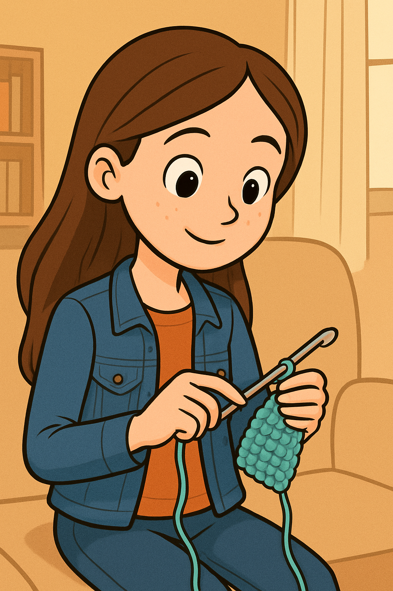

Emma Knight
A Little Bit About Me:
Hello, there! My name is Emma Knight. I am an upcoming web developer in the computer science realm and I have decided to share with you some of the extracurricular hobbies I have picked up over the years. Of course, I have had many other interests in the past, but these are the ones that have stuck with me throughout the years. I hope you enjoy and learn something new!
My Hobbies:
Crochet
Crochet is a yarn craft that uses a single hooked needle to make fabric by looping stitches together. It’s used to create clothes, blankets, and decorations. Many people enjoy it as a relaxing hobby that encourages creativity and focus while producing beautiful, handmade items.
Gymnastics
Gymnastics combines strength, balance, and flexibility through routines on equipment like beams, bars, and the floor. It builds discipline, confidence, and coordination. Whether practiced for fun or competition, gymnastics highlights both artistry and athletic power in every performance.
Drawing
Drawing uses lines and shading to create images and express ideas. Artists use pencils, pens, or digital tools to capture thoughts and emotions. It builds creativity, focus, and skill, serving as both an art form and a way to communicate visually or explore imagination.